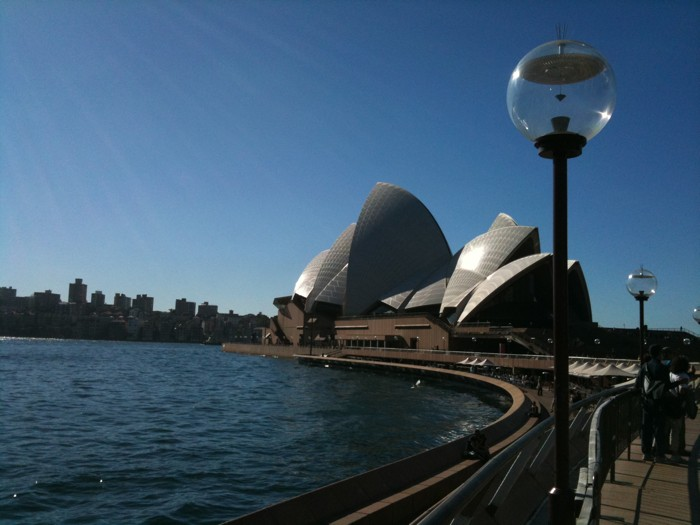

farcry cms
This is an archived post This is an archived post
Previous
Index
Lunch at Aria today.. Yeah, it's good to be me ;)
June 15 2010, 7:09 PM
by Geoff Bowers

via tweetie
217 views and 0 responses